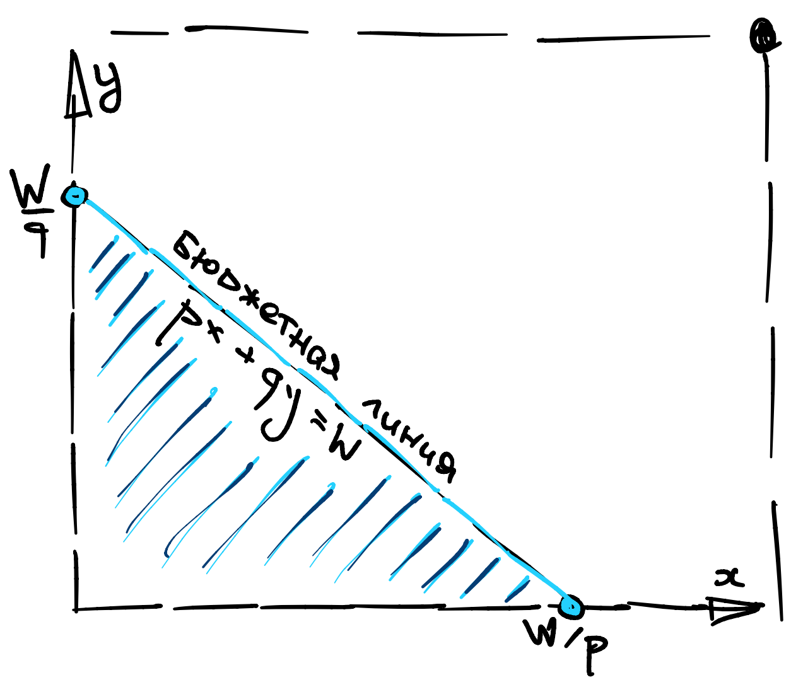

Вторая лекция, часть 1¶
Линейное бюджетное ограничение¶
Для простоты, рассмотрим два товара \(x, y\), как обычно, в \(\mathbb{R}^2_{+}\). Обозначим цены этих двух товаров как \(p, q\). Если бюджет агента составляет \(I>0\), то бюджетное ограничение представляется полуплоскостью:
которая, в пересечении с \(\mathbb{R}^2_{+}\) дает прямоугольный треугольник. Сразу оговорюсь, что цены будут всегда неотрицательные и, по большей части, даже строго положительные.
Пусть горизонтальная ось соответствует товару \(х\). Тогда координаты вершин треугольника находятся как пересечение гипотенузы с осями: \((\frac{I}{p}, 0)\) и \((0, \frac{I}{q})\). Чаще всего мы будем иметь дело именно с таким бюджетным ограничением, поэтому потренируйтесь быстро рисовать его по вершинам.
{kind=link}
Постарайтесь также ответить на следующие вопросы.
Вопрос 1: Является ли такое бюджетное ограничение выпуклым?
Попробуйте ответить самостоятельно…
Вопрос 2: Как меняется бюджетное ограничение при увеличении цены товара \(x\)?
Поскольку координата соответствующего (правого нижнего) угла треугольника стремится к нулю, то треугольник уменьшается за счет “поворота” гипотенузы вокруг противоположной вершины.
Вопрос 3: Как меняется бюджетное ограничение при увеличении бюджета \(I\)?
Поскольку координаты обеих вершин увеличиваются пропорционально, то гипотенуза “отъезжает” в сторону противоположную началу координат.
{kind=link}
Метод Лагранжа¶
Метод (Множителей) Лагранжа своими корнями уходит в физику и был разработан, в первую очередь, для решения выпуклых оптимизационных задач. Однако, даже если задача не выпуклая, анализ все равно можно проводить на языке Лагранжа, пусть и с оговорками. Таким образом, существует две основные интерпретации метода: выпуклая и невыпуклая.
Предположим, что наше бюджетное ограничение
а функция \(U(x, y)\) - непрерывная. Мы хотим промаксимизировать эту полезность на бюджетном ограничении:
Собственно метод¶
Mетод Лагранжа заключается в выписывании новой функции, называемой Лагранжианом. Она зависит от всех переменных, по которым мы оптимизируем, но также обладает новыми переменными, называемыми множителями Лагранжа, по одному на каждое (существенное) ограничение:
Если есть сомнения в том, что решения не осях, надо выписать более общий Лагранжиан:
поскольку \(x \geqslant 0\) и \(y \geqslant 0\) это тоже ограничения. Но до этого, как правило, не доходит, потому что в экономических приложениях решение, как правило, внутреннее.
Далее, предлагается найти экстремум Лагранжиана по всем переменным, включая множители Лагранжа, то есть, надо решить следующую систему уравнений:
Затем, возможно, провести анализ второго порядка, то есть, среди полученных кандидатов отобрать те, для которых \(\nabla^2 \mathcal{L}_{(x,y)} \leqslant 0\) на касательном к ограничению пространстве, то есть, квадратичная форма Гессиана отрицательно (полу-)определена.
Как это вообще связано с оригинальной задачей, вообще говоря, не совсем понятно.
Выпуклая интерпретация¶
Выпуклая интерпретация метода Лагранжа, также называемая Сильным Принципом Лагранжа или Сильная Дуальность или Теорема о Минимаксе, была сформулирована Вон Нейманом - американским математиком Венгерского происхождения в 1928 году и существенно повлияло на развитие экономической мысли.
Theorem 3 (Минимакс)
Значение задачи оптимизации с ограничением (левая часть) связано со значением некоторой дуальной задачи (правая часть):
если только задача выпукла, то есть, ограничения выпуклы а функция вогнута или квази-вогнута. Более того, их экстремумы совпадают.
Поиск экстремума (конкретно седла) правой задачи как раз характеризуется решением системы уравнений
Никаких условий второго порядка проверять не надо, потому что задача уже выпукла, по построению. Чтобы проверить себя, попробуйте ответить на следующие вопросы.
Вопрос 1: Когда Лагранжиан является выпуклым по \(x,y\)?
Вопрос 2: Если \(U(x,y)\) не вогнута но квази-вогнута, что делать?
Невыпуклая интерпретация¶
Совершенно независимо, была разработана более общая (но и более муторная) технология решения невыпуклых задач оптимизации, начиная с 1939 года, и носящая имя сразу трех математиков: Каруш, Кун и Такера. Вам она, скорее всего известна как Условия Первого Порядка и Условия Второго Порядка.
Theorem 4 (ККТ)
В гладкой задаче оптимизации, экстремальные точки характеризуются тем, что градиенты ограничений и самой функции линейно зависимы, то есть:
Это мистическим образом совпадает с условием на экстремум Лагранжиана. Отсюда Условия первого Порядка и Метод Множителей Лагранжа.
A Условия Второго Порядка принимают вид отрицателъной определенности квадратичной формы:
на касательном к ограничении пространстве.
Вопрос 3: Убедитесь, что проверка Условия Второго Порядка совпадает с проверкой квази-вогнутости функции \(U\) в экстремальной точке.
Вопрос 4: Как вы думаете, может ли быть так что Условия Второго Порядка выполнены, но при этом функция не квази-вогнутая?.
Интерпретация множителя Лагранжа¶
У множителя Лагранжа есть специальная экономическая интерпретация.
Давайте интерпретировать \(B(x,y) = px + qy - I\) как перерасход бюджетных средств. Тогда Лагранжиан имеет вид:
и множитель Лагранжа \(\lambda\) интерпретируется как теневая цена нарушения бюджетного ограничения. То есть, мы как бы “покупаем” возможность перерасхода бюджетных средств по цене \(\lambda\).
Если, по какой то причине, у одного из товаров есть нетривиальная квота \(x \leqslant \bar x\) то Лагранжиан будет такой:
и множитель Лагранжа \(\gamma\) интерпретируется как теневая цена дополнительной единицы товара \(x\) сверх квоты. То есть, мы как будто покупаем его на черном рынке по цене \(\gamma\).
Значение Лагранжиана в оптимуме¶
Важно также помнить один факт. Если вы решили задачу максимизации полезности и получили, скажем, \(V(p,q,I)\) как значение целевой функции, то оно обязательно совпадает с самим Лагранжианом в седловой точке \(x^{\ast}, y^{\ast}, \lambda^{\ast}\):
Это знание сильно пригодится нам в будущем.
Функции спроса¶
Назовем функциями (кривыми) спроса \(x^{\ast}(p, q, I), y^{\ast}(p, q, I)\) решение задачи максимизации полезности при бюджетном ограничении:
Функция спроса на первый товар \(x^{\ast}(p, q, I)\) и на второй товар \(y^{\ast}(p, q, I)\) зависят от трех разных параметров: своей цены, чужой цены и бюджета. Чаще всего нас будут интересовать
Definition 17
кривые “цена-потребление” \(x^{\ast}(p,q, \ldots)\), \(y^{\ast}(p,q, \ldots)\), обычно называемые просто кривые спроса.
кривые “доход-потребление” \(x^{\ast}(I, \ldots)\), \(y^{\ast}(I, \ldots)\), также называемые, если их изобразить в \(\mathbb{R}^n\), кривыми Энгеля, в честь немецкого статистика Эрнста Энгеля (Engel).
Нормальные и инфериорные товары¶
В этот раз обойдемся без великих людей.
Definition 18
Нормальными товарами называются товары, кривые спроса которых монотонно возрастают по доходу, то есть, \(x\) нормальный, если
Проверка нормальности при аккуратно выведенных кривых спроса - это механическое упражнение в дифференцировании.
Считается, что большая часть товаров - нормальны, однако есть исключения. Например, хлеб, рис, консервы и другие “товары первой необходимости” иногда интерпретируются как худшими (инфериорными) по отношению к красному мясу, рыбе, овощам и фруктам.
Definition 19
Товар у которого нормальность нарушается хотя бы при каких то значениях параметров то есть,
называется инфериорным (при этих значениях параметров).
Инфериорность, от английского inferior, означает что ваш товар \(x\) является худшим по отношению к какому то другому товару \(y\). Когда бюджет растет, вы тратите большую часть дохода на \(y\), и меньшую на \(x\), да так что в абсолютном значении потребление \(x\) уменьшается. Для того, чтобы сломать нормальность \(x\), обязательно должен быть хотя бы один не инфериорный товар \(y\), по отношению к которому \(x\) будет инфериорным.
Property 6
Все товары не могут быть одновременно инфериорными, хотя бы один точно нормальный.
Доказать это утверждение очень легко. Если бюджетное ограничение таково, что оптимум находится “внутри”, то небольшое изменение параметра \(I\) не повлияет на оптимум. Если бюджетное ограничение таково, что оптимум находится “на бюджетной линии”, то дифференциируя \(B(x,y)= 0\) по \(I\) мы получаем:
Поскольку цены неотрицательные, то инфериорность всех товаров означает, что слева стоит отрицательное число, а справа единица. Противоречие.
Вопрос 5: Убедитесь, что кривая Энгеля у нормальных товаров всегда неубывает
Вопрос 6: Придумайте жизненный пример товара, у которого кривая Энгеля выходит на плато.
Вопрос 7: Придумайте аргументы за и против того, что общественный транспорт является инфериорным благом.
Субституты и комплементы¶
Мы продолжаем исследовать свойства кривых спроса. Одним из самых важных понятий в теории потребителя является замещаемость (substitutability). Считается, что многие товары в той или иной степени замещаемы, некоторые больше некоторые меньше. Некоторые пары товаров особенно выделяются в этом плане, например: пепси и кола, лыжи и сноуборд… Если цена одного такого товара в паре сильно вырастет, то спрос на второй товар скорее всего вырастет. Такие товары называются субститутами.
Definition 20
Субститутами (substitutes) называются пары товаров, кривые спроса которых монотонно возрастают по ценам друг друга, то есть, \(x\) субститут к \(y\), если \(\frac{\partial x^{\ast}}{\partial q} \geqslant 0,\) a \(y\) субститут к \(x\), если \(\frac{\partial y^{\ast}}{\partial p} \geqslant 0.\)
У некоторых пар товаров наблюдается прямо противоположное свойство, их обычно покупают вместе, например: кайак и весло, компьютер и монитор… Если цена одного такого товара в паре сильно вырастет, то спрос на второй товар скорее всего упадет. Такие товары называются комплементами.
Definition 21
Комплементами (complements) называются пары товаров, кривые спроса которых монотонно убывают по ценам друг друга, то есть, \(x\) комплемент к \(y\), если \(\frac{\partial x^{\ast}}{\partial q} < 0,\) a \(y\) комплемент к \(x\), если \(\frac{\partial y^{\ast}}{\partial p} < 0.\)
К сожалению, это свойство не является симметричным, то есть, \(x\) может быть субститутом к \(y\), но y при этом может оказаться комплементом к \(x\), хоть и в очень редких случаях. Это сигнализирует нам о том, что определение выбрано не совсем удачно, но какое то время нам придется с этим противоречием смириться.
Косвенная полезность¶
В каждой задаче оптимизации есть два объекта, идущие рука об руку: координаты оптимума и значение целевой функции (полезности). Мы довольно много внимания уделили координатам оптимума, то есть кривым спроса. А как насчет второго?
Definition 22
Назовем косвенной полезностью значение целевой функции в оптимуме, в задаче максимизации полезности:
На самом деле, не столь важно какой буквой обозначается косвенная полезность: \(U^{\ast}\) или \(V\). Гораздо важнее набор аргументов: \(p,q, I\), подсказывающий что координатам \(x,y\) были присвоены какие то значения в процессе оптимизации.
Когда вас просят решить оптимизационную задачу, если не сказано обратное, от вас скорее всего ожидают оба объекта: спрос и косвенную полезность. Но будте аккуратны, потому что…
Tip
В отличие от координат оптимума, косвенная полезность, конечно же зависит от всех монотонных преобразований, которые вы наложили на свою полезность.
Если вы применили преобразование, например, \(\log x\) чтобы быстрее решить задачу, и получили косвенную полезность, то вам придется ее “откатить”, то есть применить к ней обратное преобразование \(e^x\), чтобы ответ был формально верным.
Непрерывнисть спроса¶
В большей часть примеров, которые мы будем рассматривать, спросы будут выражаться через элементарные функции, такие как \(x^2, \log x, 1/x\)… Все эти функции непрерывны. Совпадение?
Ответить на этот вопрос нам поможет следующая теорема.
Theorem 5 (Максимум)
В строго выпуклой задаче оптимизации, решение, если оно существует, то единственно. Более того, если задача непрерывна по параметрам, то как координаты оптимума так и значение целевой функции непрерывны по параметру.
То есть, каждый раз когда вы ищите спрос, вам надо убедиться, что
задача строго выпуклая
задача непрерывна
и тогда все будет гарантированно непрерывным.
Осталось понять, что значит строгая выпуклость и непрерывность задачи. Это несколько субъективные понятия, и я не хочу вдаваться в технические и философские детали. Поэтому, мы сфокусируемся на более-менее общей постановке в теории потребителя, в которой их легко идентифицировать:
Definition 23
В строго выпуклой задаче, функция \(U\) (квази) вогнутa, функция \(B\) (квази) выпукла, причем одна из двух строго.
Definition 24
В непрерывной задаче, обе функции \(U\) и \(B\) непрерывны.
Непрерывность спроса означает, что, грубо говоря, вы всегда сможете найти частичное равновесие на рынке любого отдельно взятого товара, как пересечение спроса с предложением. Мы обсудим частичное равновесие ближе к концу курса.